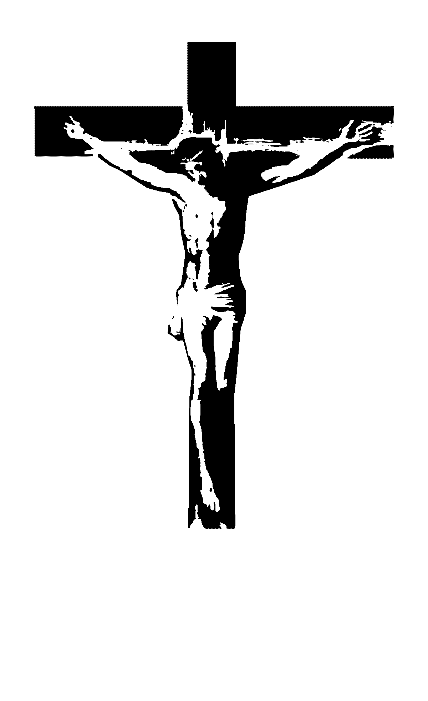

PDKKI
MELBOURNE
Persekutuan Doa Keluarga Katolik Indonesia
"Dalam kuasa dan karya Roh Kudus, berkumpul bersama melalui penghayatan iman katolik untuk bertumbuh dan mencapai tujuan hidup Kristiani"
Misa
Adorasi
Persekutuan Doa
Praise & Wordship
Pendalaman Iman
Kebangunan Rohani Katolik
Retret
Pelayanan
About Us
PDKKI Melbourne... Apa tuh?
Persekutuan Doa Keluarga Katolik Indonesia (PDKKI) Melbourne adalah sebuah organisasi yang berada di bawah naungan Keluarga Katolik Indonesia (KKI) Melbourne. Menurut sejarahnya, Persekutuan Doa (PD) ini pertama kali dibentuk pada tahun 1997 dengan nama PD Santa Maria, dan pada bulan Juli 1998 diresmikan menjadi bagian dari KKI dengan nama PDKKI Melbourne.
PDKKI Melbourne, dengan segenap potensi yang berlandaskan pada iman dan ajaran Gereja Katolik, memiliki tujuan utama untuk membawa para anggota mengenal Yesus yang hidup, serta merasakan cinta kasih Allah yang sempurna dalam bimbingan Roh Kudus demi mencapai kehidupan yang kudus.
Terus kegiatan PDKKI Melbourne apa aja?
PDKKI Melbourne mengadakan kegiatan Persekutuan Doa (PD) rutin seminggu sekali yang mencakup doa, pujian dan penyembahan, serta pengajaran/sharing/diskusi. Di samping itu, beberapa kegiatan lain PDKKI yang dapat membangun dan membentuk kehidupan rohani para anggotanya untuk mencapai tujuan di atas adalah:
- Kebangunan Rohani Katolik (KRK)
- Malam Penyegaran Rohani (MPR)
- Seminar Hidup Baru (SHB)
- Retret tahunan PDKKI Melbourne
Terus apa lagi?
Ingin mengenal PDKKI Melbourne lebih dalam? Penasaran akan pengajaran, sharing, dan diskusi yang diadakan PDKKI Melbourne untuk membawa anggotanya mengenal dan merasakan cinta kasih Allah? Ikuti terus perkembangannya di website ini. Terlebih dari itu, ingin melangkah maju untuk mengenal Tuhan dengan lebih lagi? Ingin belajar untuk hidup di hadirat-Nya mencapai kekudusan? Mari datang ke acara persekutuan doa PDKKI Melbourne setiap Sabtu sore di St. Augustine's Church, Melbourne, VIC 3000.
Contact Person :
- Lucy Munanto - 0430 455 669
- Andreas Setiawan - 0452 027 177
Kegiatan Berkala :
Setiap hari Sabtu @ St. Agustine Church @18.00
Lokasi :
St. Augustine's Church
631 Bourke St. Melbourne, Vic 3000
Public Transport :
Train
All city loop train - Alight at Southern Cross Station
Tram
Tram no. 86 to Waterfront City Docklands or 96 to St. Kilda Beach
Alight at stop no. 1, Southern Cross Station